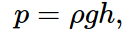

Расчет деревянной опалубки
Введение
Первый цикл статей посвящен бетонным работам больше в промышленном, нежели в гражданском строительстве. Для того, чтобы его "осилить", требуются, по-крайней мере, остаточные знания по сопромату и строительной механике.
С чего начинается строительство любого объекта? С фундамента, которые, как правило, изготавливаются из бетона/железобетона. Оставим пока в стороне процессы армирования, поскольку это, возможно, самая простая часть работ в этом цикле. Сложности начинаются, когда бригада переходит к установке опалубки.
В настоящее время грамотно составленный ППР, в котором правильно указана последовательность сборки и раскрепления опалубки - что-то из ряда вон выходящее. К тому же фундаменты редко делают с использованием заводской опалубки, поскольку с одной стороны, проектировщики игнорируют требования унификации, что частенько приводит к невозможности или значительной трудоемкости установки стандартных щитов. С другой стороны, поскольку строительная отрасль развалена, отсутствует спрос на опалубку, что в свою очередь влечет за собой нерентабельность изготовления опалубки на отечественных заводах, либо ее завышенную стоимость. Поэтому ее закупают за границей уже за валюту. И поскольку стоимость рубля искусственно занижается (якобы в интересах экономики), получается, что для средней строительной конторы использовать качественную заводскую опалубку не представляется возможным. Выход из данной ситуации - городить щиты из подручных материалов (фанера или доска).
Обычно бригадиром назначают самого старого (необязательно) и самого опытного бетонщика (это один человек..). В случае, если у человека за плечами лет так 20 опыта, то можно быть уверенным, что в 90% случаях он самостоятельно установит и закрепит все как надо. Но периодически мы можем наблюдать картину, когда бетон весело бежит из радостно хрустнувшей опалубки. Грустно посчитав убытки, мы приходим к выводу, что впредь нужно как-то самостоятельно рассчитывать ее на прочность. Что ж... Давайте разбираться.
Выбор материалов
Как говорилось выше, у нас 2 варианта: доска и фанера. На мой взгляд, фанеру для таких целей использовать нерентабельно. Куб ламинированной фанеры стоит порядка 1000$ (я не говорю, про китайскую дешевку). Количество оборотов опалубки незначительно. Как итог - необоснованная дороговизна изготовленных щитов. По моим наблюдениям, фанеру используют (для отдельно стоящих фундаментов), в основном, новички. Мы же будем рассматривать вариант с доской (хотя, никто не мешает использовать фанеру, там то же алгоритм). Распространенное заблуждение в том, что доски "приклеиваются" к бетону и потом щиты не оторвать. Это не так. Для примера, мы будем городить что-то вроде этого (см. фото ниже).
Запроектируем нашу опалубку по аналогии с балочной клеткой, которую на одном из курсов рассчитывают студенты ПГС.
Нагрузки от бетонной смеси.
В СП 70.13330.2012 (Приложение Т) дана формула расчета давления смеси в зависимости от разных параметров, однако, далее (п.2.2.7) сказано, что давление с учетом всех коэффициентов не может превышать гидростатическое. Его и будем использовать в расчетах. Формула гидростатического давления:
 где ρ -плотность жидкости (раствора),g - ускорение свободного падения,
h - высота столба жидкости
Примем плотность тяжелого бетона равной 2500 кг на кубический метр. Если есть точная информация о плотности бетона, изготовляемого на БРУ, то можно брать ее (плотность). Хотя я этим никогда не заморачивался.
Заметим также, что нет никакой зависимости давления смеси от объема этой смеси, лишь от высоты.
Смесь у нас давит на палубу, которую мы изготовим из доски 100*25. Доски соединяются исключительно саморезами (гвоздями неэкономично и долго). Палубу поддерживают деревянные ребра (второстепенные балки), которых в свою очередь поддерживают схватки (основные балки), все изготовленные из той же доски (хотя здесь можно и увеличить). Давление смеси воспринимают стальные тяжи.
Далее...